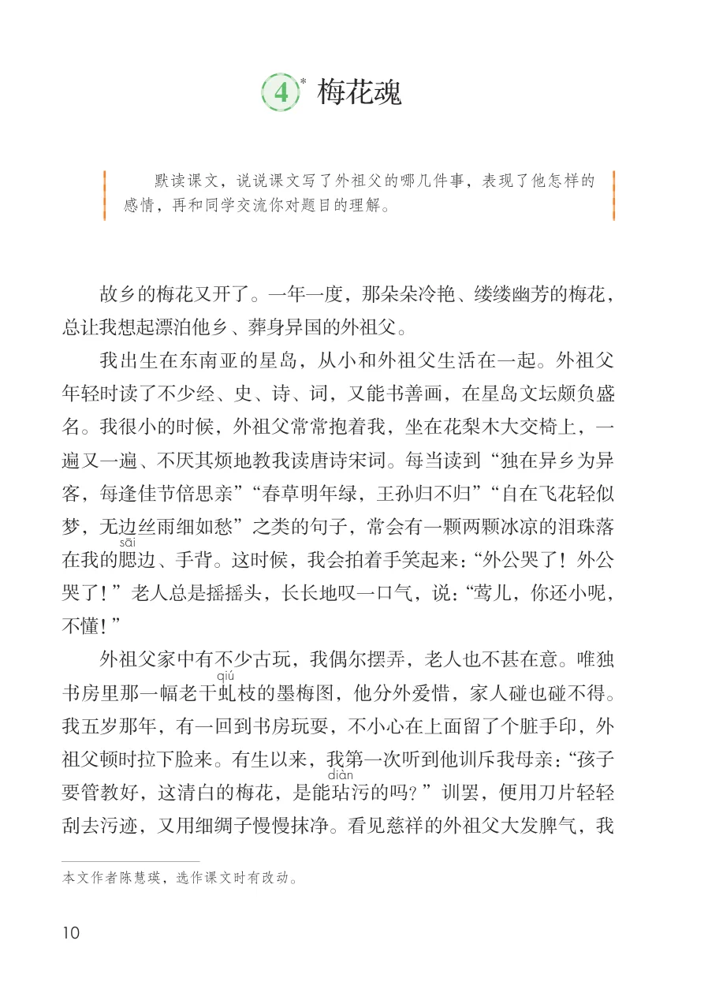
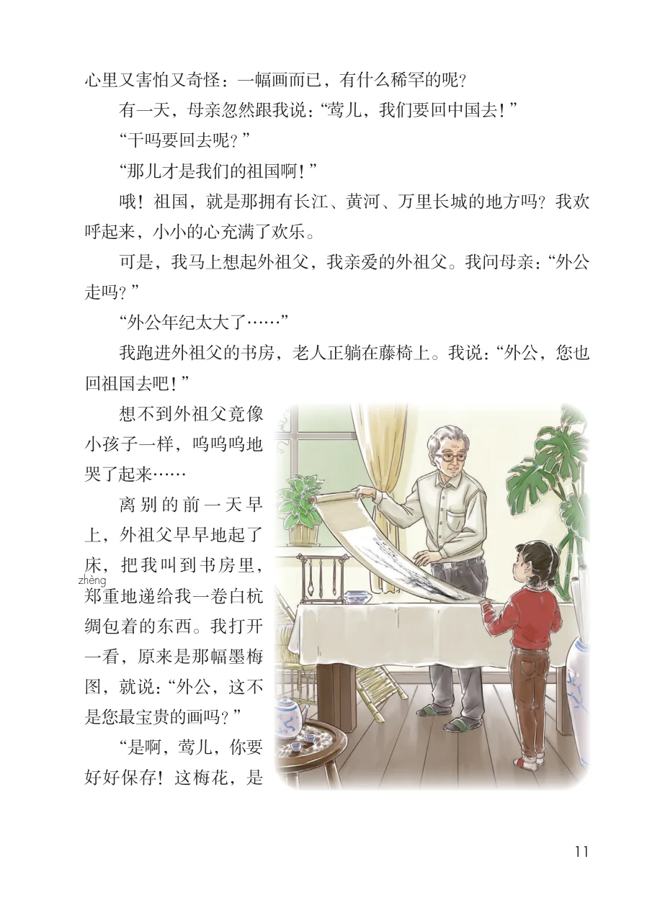
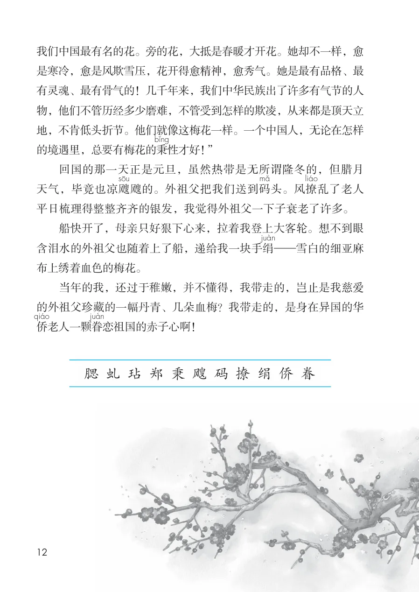

展开章节菜单
4 梅花魂
*
故乡的梅花又开了。一年一度，那朵朵冷艳、缕缕幽芳的梅花，总让我想起漂泊他乡、葬身异国的外祖父。
我出生在东南亚的星岛，从小和外祖父生活在一起。外祖父年轻时读了不少经、史、诗、词，又能书善画，在星岛文坛颇负盛名。我很小的时候，外祖父常常抱着我，坐在花梨木大交椅上，一遍又一遍、不厌其烦地教我读唐诗宋词。每当读到“独在异乡为异客，每逢佳节倍思亲”“春草明年绿，王孙归不归”“自在飞花轻似梦，无边丝雨细如愁”之类的句子，常会有一颗两颗冰凉的泪珠落
边、手背。这时候，我会拍着手笑起来：“外公哭了！外公哭了！”老人总是摇摇头，长长地叹一口气，说：“莺儿，你还小呢，不懂！”
外祖父家中有不少古玩，我偶尔摆弄，老人也不甚在意。唯独
枝的墨梅图，他分外爱惜，家人碰也碰不得。我五岁那年，有一回到书房玩耍，不小心在上面留了个脏手印，外
祖父顿时拉下脸来。有生以来，我第一次听到他训斥我母亲：“孩子要管教好，这清白的梅花，是能玷
污的吗？”训罢，便用刀片轻轻刮去污迹，又用细绸子慢慢抹净。看见慈祥的外祖父大发脾气，我
查看教材原页（保留全部图片、注音与原始排版）

心里又害怕又奇怪：一幅画而已，有什么稀罕的呢？
有一天，母亲忽然跟我说：“莺儿，我们要回中国去！”
“干吗要回去呢？”
“那儿才是我们的祖国啊！”
哦！祖国，就是那拥有长江、黄河、万里长城的地方吗？我欢
呼起来，小小的心充满了欢乐。
可是，我马上想起外祖父，我亲爱的外祖父。我问母亲：“外公
走吗？”
“外公年纪太大了……”
我跑进外祖父的书房，老人正躺在藤椅上。我说：“外公，您也
回祖国去吧！”
小孩子一样，呜呜呜地
上，外祖父早早地起了
床，把我叫到书房里，
绸包着的东西。我打开
一看，原来是那幅墨梅
图，就说：“外公，这不
是您最宝贵的画吗？”
“是啊，莺儿，你要
好好保存！这梅花，是
查看教材原页（保留全部图片、注音与原始排版）

我们中国最有名的花。旁的花，大抵是春暖才开花。她却不一样，愈是寒冷，愈是风欺雪压，花开得愈精神，愈秀气。她是最有品格、最有灵魂、最有骨气的！几千年来，我们中华民族出了许多有气节的人物，他们不管历经多少磨难，不管受到怎样的欺凌，从来都是顶天立地，不肯低头折节。他们就像这梅花一样。一个中国人，无论在怎样的境遇里，总要有梅花的秉
性才好！”
回国的那一天正是元旦，虽然热带是无所谓隆冬的，但腊月天气，毕竟也凉飕
飕的。外祖父把我们送到码
头。风撩
乱了老人平日梳理得整整齐齐的银发，我觉得外祖父一下子衰老了许多。
船快开了，母亲只好狠下心来，拉着我登上大客轮。想不到眼含泪水的外祖父也随着上了船，递给我一块手绢布上绣着血色的梅花。
当年的我，还过于稚嫩，并不懂得，我带走的，岂止是我慈爱的外祖父珍藏的一幅丹青、几朵血梅？我带走的，是身在异国的华
恋祖国的赤子心啊！
查看教材原页（保留全部图片、注音与原始排版）
